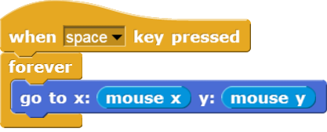

and
and  reporters are found in the Sensing tab group, and report the current x and y position of the mouse pointer.
reporters are found in the Sensing tab group, and report the current x and y position of the mouse pointer.
4. Kaleidoscope
Explore this drawing program for a little bit. Press the spacebar to run the program, and move your mouse cursor over the stage of the Snap! window. While over the stage, use the d (pen down), u (pen up), and c (clear) keyboard keys to change what gets drawn on the screen. The script that causes the sprite to follow the pointer is

As you can see, this drawing program features more Control blocks, in addition to the forever block first introduced in the Follow the Mouse activity. These hat shaped blocks, which can be used only at the beginning of a script, indicate when a specific script should be run.
The script in the image above just makes the sprite follow the mouse. The block moves the sprite directly to a position on the stage, as you might have guessed. The and reporters are found in the Sensing tab group, and report the current x and y position of the mouse pointer.
Try this: change the go to block to look like this:

How does this change the program's behavior?
For this activity, your job is to make a (kind of) kaleidoscope, like:

Tips and Tricks:
alone. You will find the and blocks under the Sensing tab. You will find the math blocks such as under the Operators tab. We will explore the other blocks under the Operators tab in future labs.
Once you figured this out, try out some complicated formulas and/or more sprites, and share with your classmates!